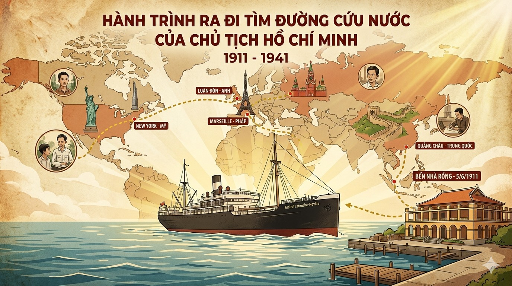
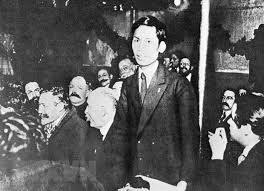
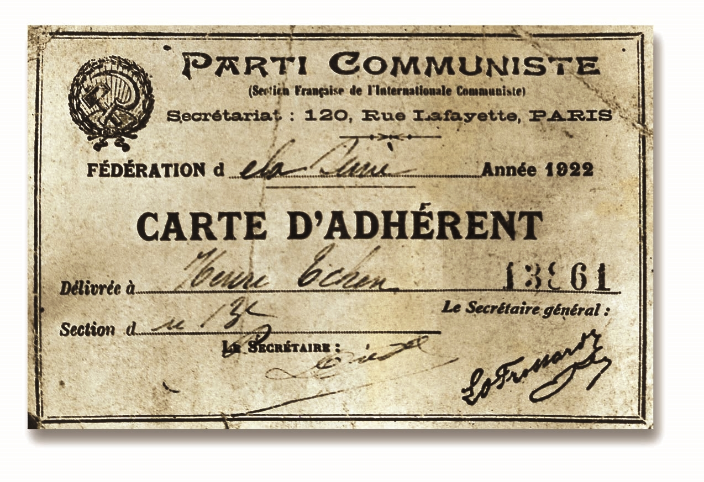

Chủ tịch Hồ Chí Minh (1911 - 1941)
🎵 Bài hát: Còn gì đẹp hơn
Sáng tác: Nhạc sĩ Nguyễn Hùng
(Nhấn nút Play để lắng nghe giai điệu hào hùng về Người thanh niên yêu nước)
* Nhạc nền sẽ tự động phát (nếu trình duyệt cho phép).

Đi qua nhiều nước châu Phi, châu Mỹ (Mỹ) và các nước thuộc địa, làm thuê kiếm sống.
